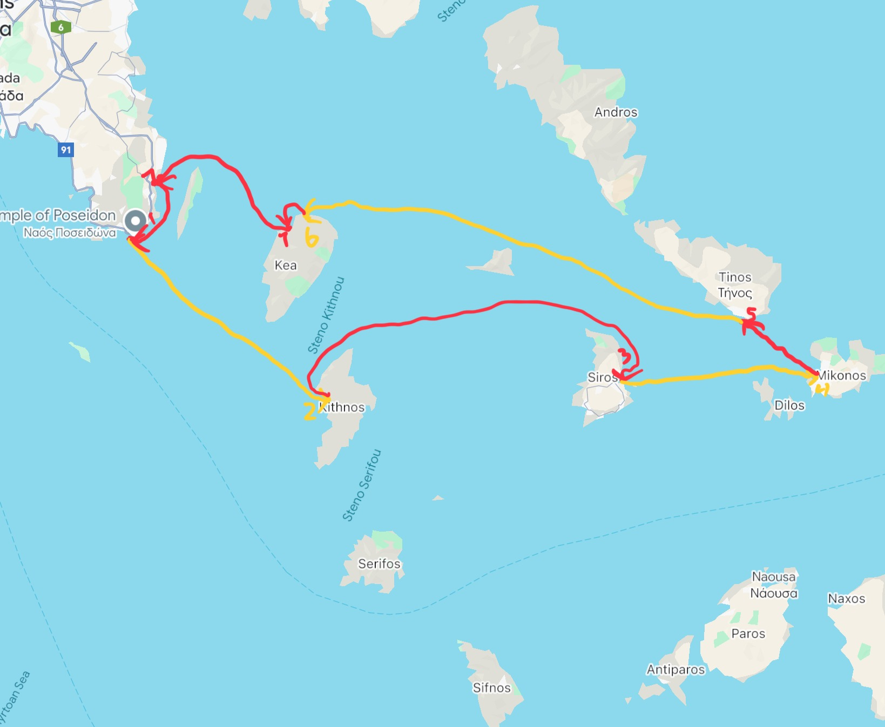
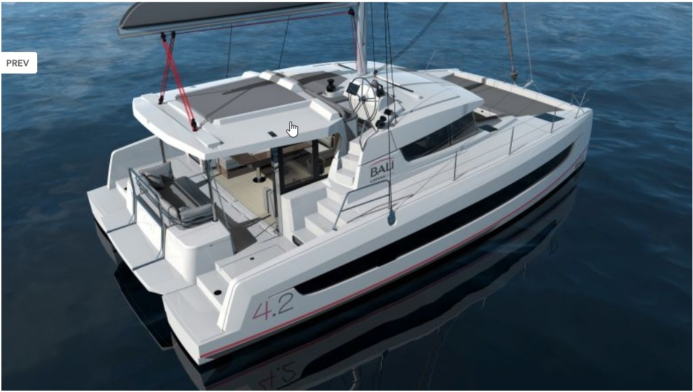
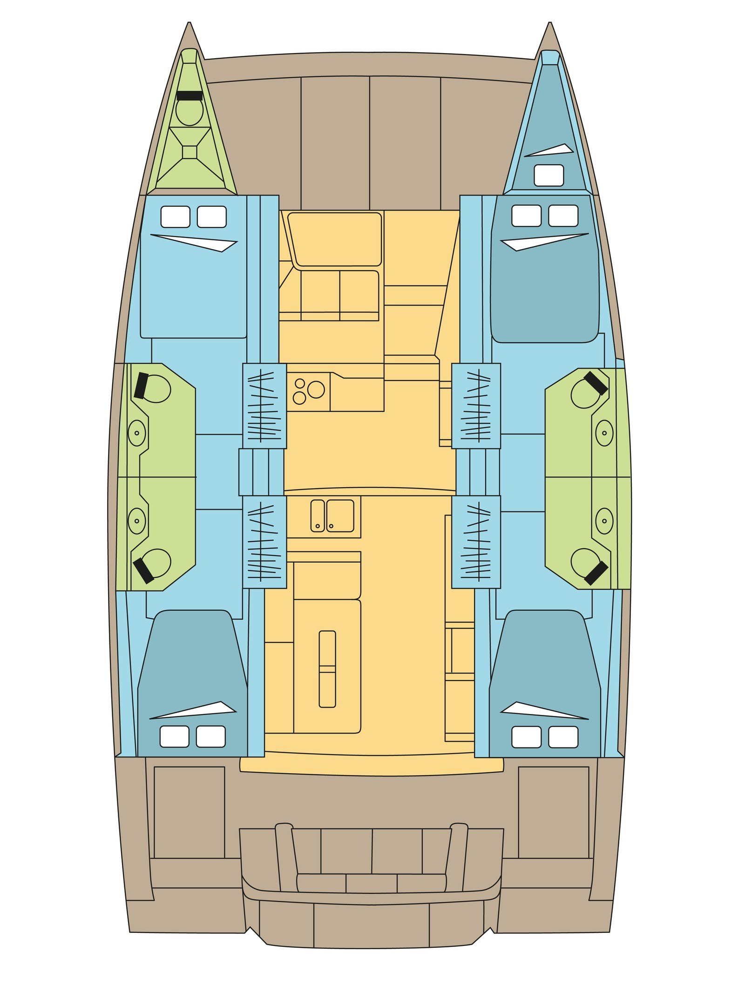
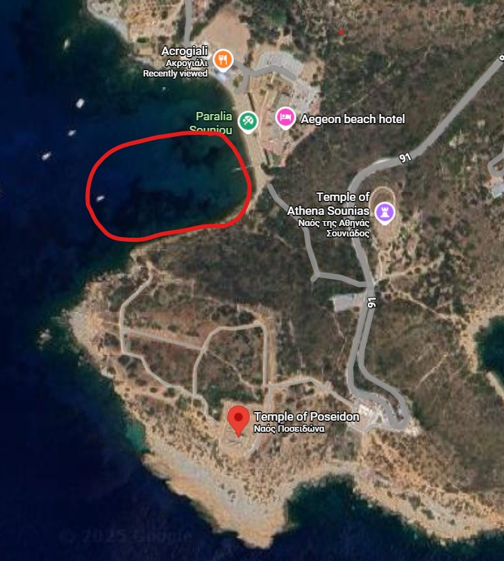
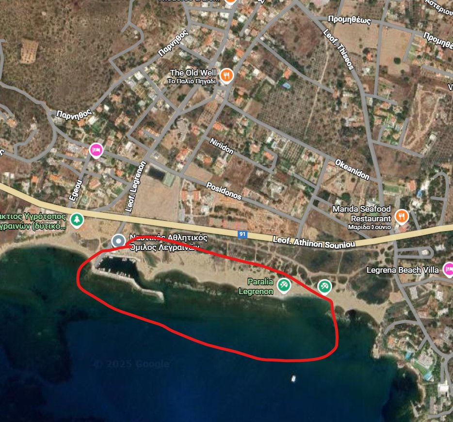
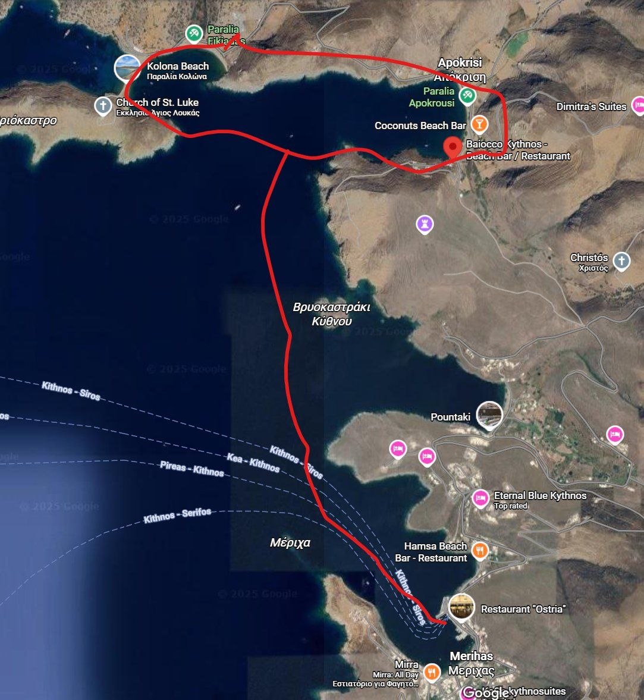
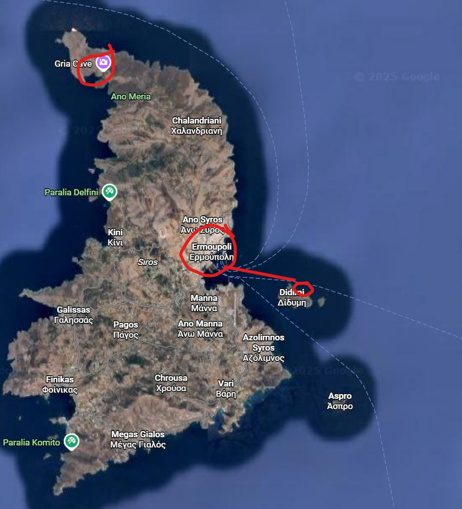
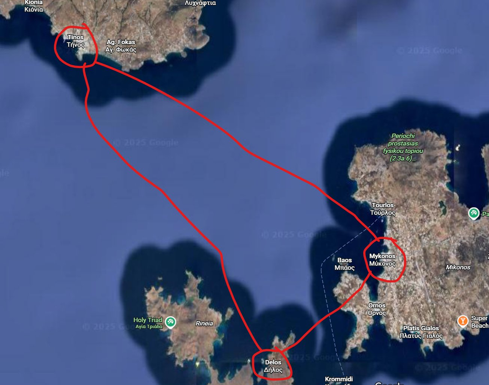
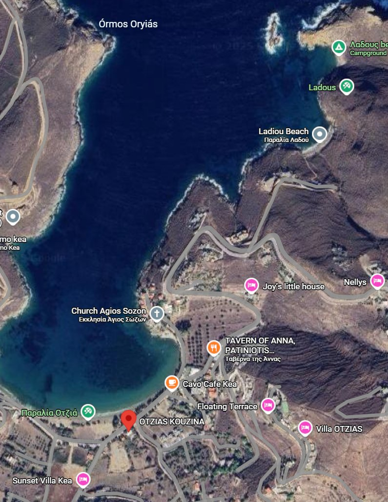
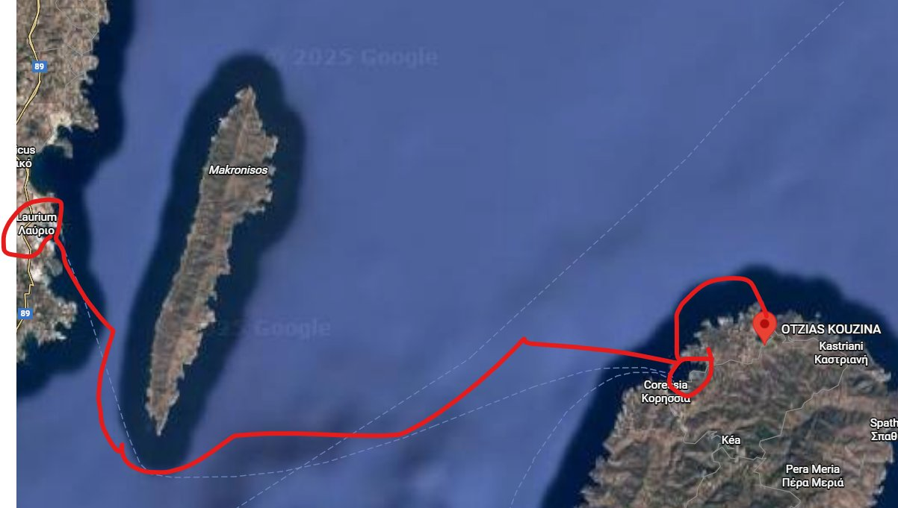

A 7 day Odyssey aboard a 42' catamaran. Starting and ending at Lavrion, we visited the islands of Kithnos, Siros, Mikonos, Tinos, and Kea. Great food, great shopping, unforgettable views, private beaches, and of course some wonderful scuba diving.
The Cyclades are a stunning archipelago in the heart of the Aegean Sea, celebrated for their iconic whitewashed architecture, crystal-clear waters, and rich cultural heritage. These islands were once the cradle of the Cycladic civilization, known for its elegant marble figurines and seafaring prowess. On our sailing journey, we'll visit the dramatic Temple of Poseidon at Cape Sounion, explore the neoclassical charm of Syros, the wild beaches and traditional villages of Kythnos, the cosmopolitan buzz of Mykonos, the artistic soul of Tinos, and the rugged beauty of Kea. Each island offers its own rhythm, inviting you to slow down, soak in the scenery, and savor the essence of Greek island life.
8/23 Saturday Day 1 - board the ship at 12pm and sail south to Sounion. Distance: 4 NM. Sailing Time: 1 Hr.
8/24 Sunday Day 2 - Sounion to Kithnos. Distance: 25.3 NM. Sailing Time: 3:10 Hrs.
8/25 Monday Day 3 - Kithnos to Empoupoli (Syros Island). Distance: 36.9NM. Sailing Time: 4:37 Hrs.
8/26 Tuesday Day 4 - Empoupoli to Mykonos. Distance: 18.4 NM. Sailing Time: 2:18 Hrs.
8/27 Wednesday Day 5 - Mykonos to Tinos. Distance: 10NM. Sailing Time: 1:15Hrs.
8/28 Thursday Day 6 - Tinos to Kea beach Otzias. Distance: 39.9NM. Sailing Time: 5:00Hrs.
8/29 Friday Day 7 - Kea beach to Kea downtown. Distance: 3.6NM. Sailing Time: 28 min. Kea Downtown to Lavrion Base: Distance: 15.1NM. Sailing Time: 1:53Hrs.

We chartered a Bali 4.2 Catamaran. It's 42 feet long. It comes with 4 cabins all with their own bathrooms. It has an additional porthole cabin that we can use for storage and an extra bathroom on the front. Dream Yacht doesn't have great photos/details of this ship on their website but you can see what they have below:


We'll be out at sea, so it's a good time to practice minimalism. Not too much storage in the cabins. The Charter company provides life jackets, bed sheets, blankets, and pillows. Everything else, we'll need to bring. Here is a list of the essentials to get you started:
Most (if not all) of our meals are going to be on land. Our grocery shopping will be at a minimum. Mostly we will want to load up on any snacks, light breakfast items, and drinks. All costs are split by the group so whoever buys groceries, please put the total into Splitwise. We will have some time to do grocery shopping in Lavrion while the captain/co-captain are doing the boat check out. We can also grab more food/drinks at each destination.
The trip will be a blast and we aren't expecting to have any major issues arise. Those of you who have already joined us on one of our sailing adventures know what to expect. Those of you who are new, please take the time to go over the links below:
The start of our journey. We will make our way from Athens to Lavrion in the morning. We need to be in Lavrion for boat check out at 11 a.m. Once we have the boat ready, we will make our short voyage down to Sounion to see the Temple of Poseidon. We will anchor near the site by a beach. For those interested in exploring the ruins, we will take the dinghy and make the hike up to the Temple. Whoever doesn't want to go, can stay on the boat and enjoy a beach day. After we're done in the area, we will make our way to the nearby pier, where we will dock for the night.


We have a 3 hour 10 minute sail to our next island today. Ideally, would like to start moving around 7 a.m. to get to our destination in the morning. We have some options to choose from. We can decide to go to Kolona Beach and anchor there for morning swim/food. When we're done swimming, we can raise anchor and sail into the main port of Merihas. Here are some ideas for things to do in Kithnos:

We have our second longest sailing day today. 4 hours and 37 minutes. Ideally we get up and start sailing around 6. Everyone can continue to sleep while the boat is underway. Ermoupoli is a pretty large, industrial city. We should have some good restaurant options here. Along with some cool museums to check out. Since it's an industrial city, there are no good beaches here, but on the way, we could stop by Didimi Island for a morning swim. It is an uninhabited island, so we would need to have morning snacks ready. It does have a sandy beach though. Here are some top things to do at Ermoupoli:

A shorter sailing day today, only 2 and a half hours. Mykonos gets very busy, so we will still probably want to get an earlyish start to the day. Mykonos is the biggest stop for tourists that we'll be visiting. I'm hoping to get an anchorage at Mykonos Old Port, but if it's too packed, we might have to pivot. The island itself is a destination—famous for its nightlife, whitewashed architecture, and beach clubs. Whether you're strolling through Chora or lounging at Psarou Beach, the vibe is electric.
Today we have a big choice to make. We could hang out at Mykonos longer and enjoy the city. Maybe do a scuba diving tour with the local shop. Or we could sail over to Delos island, a UNESCO World Heritage Site, filled with ruins to explore. Our sail time to Tinos is only an hour and a half, so we could get there before sunset to check out some restaurants and get us a little closer for our big day 6 sailing day. There isn't as much to do on Tinos as Mykonos or Delos, but if people want to go spend more time there, that could be an option also.

Our biggest sailing day of the trip. We have just over 5 hours to get to our next island of Kea. After the hustle and bustle of the previous 2 days around Mykonos, this will be a day of relaxation. We can rest up on the long passage and, when we get to our destination, there will be more relaxing on the books. Otzias beach looks like a great spot to anchor and enjoy a relaxing beach day. There are plenty of restaurants and a dock we can dinghy to. Great day to unwind.

Our final day at sea! We have some options today as well. We'll need to be back at Lavrion Base before they close at 6pm, but we have the rest of the day to enjoy. Kea has some good scuba diving options, so this will be the best day to hop on a morning scuba diving tour. We can enjoy a morning swim at Otzias beach, then do the 30 min sail over to the main port. Check out the town there. Find another beach. Lots of options. Will need to start heading back to Lavrion around 3:30 pm. When we get back to Lavrion, they'll help us dock the boat. We can have dinner there and enjoy the last night of sleeping on the boat. Come next morning, we'll be leaving the ship.
